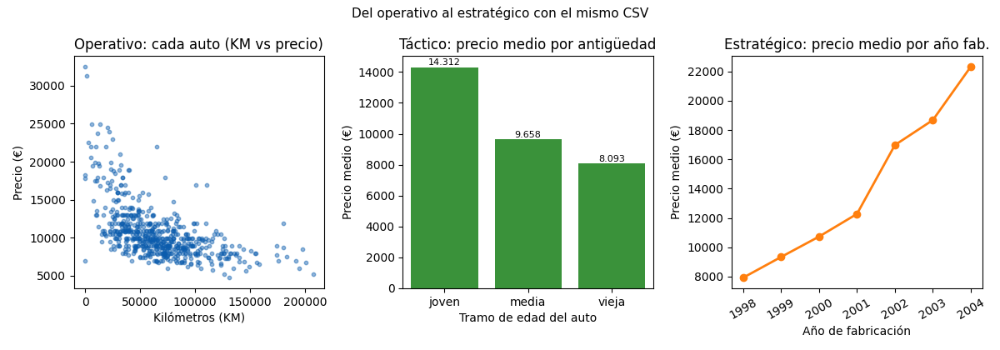
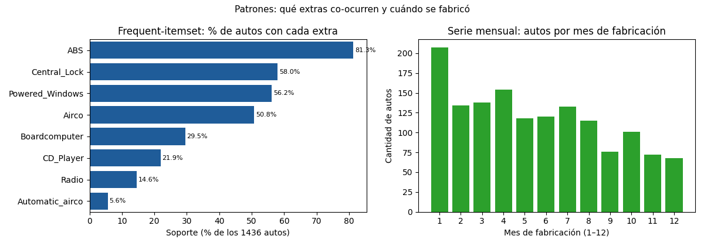

Unidad 1 · ¿Qué son los datos? · Lección 0002
Niveles de decisión, tipos de análisis y cómo ordenar el trabajo
Win de hoy: ubicar cualquier pregunta sobre ToyotaCorolla.csv en su
nivel de decisión (operativo, táctico, estratégico, predictivo/prescriptivo), en su tipo de análisis
(exploratorio, diagnóstico, predictivo, prescriptivo) y en su metodología
(TDSP),
con ejemplos reales y figuras generadas con Python.
1 · Qué es la ciencia de datos (sin humo)
La ciencia de datos es la fusión de dos campos: datos y ciencia. Datos es cualquier cosa real o imaginaria que se puede observar y registrar: el precio de un Corolla, su kilometraje, pero también una opinión o una imagen. Ciencia es el estudio sistemático del mundo físico y natural con métodos testeables, es decir, con procedimientos que otros pueden repetir y refutar. Juntando ambas ideas: la ciencia de datos es el estudio sistemático de los datos y la derivación de conocimiento usando métodos testeables para hacer predicciones acerca del universo.
Es un proceso complejo porque involucra muchos stakeholders: quien vende el auto, quien lo compra, quien financia, quien regula, quien programa. Cada stakeholder afecta y se ve afectado positiva y negativamente. Por eso existen las metodologías: esquemas para mantener el orden, organizar el trabajo y no perderse entre fuentes de datos, objetivos y personas. Todas comparten las mismas piezas (entendimiento del negocio, entendimiento de los datos, preparación, modelado, evaluación, puesta en producción), solo cambia el énfasis.
2 · Los niveles de aplicación: la organización manda
El análisis de datos obedece la estructura de una organización. No se analiza en el vacío: se analiza para alguien que decide a cierto plazo y con cierto alcance. Los tres niveles tradicionales son:
- Nivel operativo. Operaciones diarias, caso por caso. Ejemplo Toyota: ¿acepto este Corolla diésel de 63.000 km a 10.500 €? Acá viven el KM exacto, el Price pedido y el equipamiento fila por fila.
- Nivel táctico. Mediano plazo, planifica estrategias por segmentos. Ejemplo: los autos del tramo joven (hasta ~48 meses) se venden en promedio a ≈ 14.312 €, los del tramo medio a ≈ 9.658 € y los viejos a ≈ 8.093 €. Con ese dato se decide qué segmento stockear, qué margen pedir, qué garantía ofrecer.
- Nivel estratégico. Largo plazo, rumbo del negocio. Ejemplo: el precio medio sube con el año de fabricación (1998: ≈ 7.926 €; 2000: ≈ 10.728 €; 2004: ≈ 22.324 €). Esa pendiente dice dónde va el mercado y qué autos conviene buscar hoy para vender mañana.
Hay un cuarto plano que cruza a los tres: el nivel predictivo y prescriptivo. Usa modelos para saber dónde vamos a estar respecto a los 3 niveles. Son las predicciones: si sé que cada 10.000 km restan ≈ 551 € (lo mediremos en la lección 0003), puedo proyectar el operativo (cuánto ofrecer), el táctico (qué segmento será rentable) y el estratégico (cómo envejece mi stock). El nivel específico no reemplaza a los tradicionales: los alimenta.

KM vs Price, muestra de 600).
Centro: táctico, precio medio por tramo de antigüedad (joven ≈ 14.312 €, media ≈ 9.658 €, vieja ≈ 8.093 €).
Der.: estratégico, precio medio por año de fabricación (crece de ≈ 7.926 € en 1998 a ≈ 22.324 € en 2004).Snippet generador (el mismo que corre el script del curso):
import pandas as pd
df = pd.read_csv("../ToyotaCorolla.csv") # desde lessons/
tramos = pd.qcut(df["Age_08_04"], 3, labels=["joven", "media", "vieja"])
print(df.assign(tramo=tramos).groupby("tramo", observed=True)["Price"].mean().round(0))
# joven 14312.0 / media 9658.0 / vieja 8093.0
print(df.groupby("Mfg_Year")["Price"].mean().round(0))
# 1998 7926 / 2000 10728 / 2004 22324 ...Regenerar cuando quieras:
python scripts/make_figures.py --only niveles-tipos-analisis-tdsp3 · Los cuatro tipos de análisis (con el mismo auto)
Todo lo que haremos en la materia cae en cuatro tipos. Aprendelos con un solo Corolla en mente:
| Tipo | Pregunta que responde | Ejemplo Toyota |
|---|---|---|
| Análisis exploratorio (EDA) | ¿Cómo son los datos? | Histogramas de Price y KM, boxplots de la 0001, conteos de Fuel_Type (Petrol 1264 / Diesel 155 / CNG 17). No explica ni predice: describe. |
| Análisis de diagnóstico | ¿Por qué pasó lo que pasó? (ex post) | ¿Por qué los diésel promedian ≈ 11.295 € y los nafteros ≈ 10.679 €? ¿Es el combustible o es que los diésel son más jóvenes y pesados? Diagnóstico = separar causas. |
| Análisis predictivo | ¿Cuánto valdrá un auto dado lo que sé de él? | La primera función de aproximación a estudiar es la regresión lineal: Price ≈ 14.508 − 0,055 × KM. Detalle completo en la lección 0003. |
| Análisis prescriptivo | ¿Qué debería hacer a continuación para el mejor resultado? | Con el modelo en mano: descontar ≈ 551 € por cada 10.000 km al fijar precio, priorizar tramos jóvenes, descartar extras que no pagan. Orienta la toma de decisiones con resultados óptimos a futuro. |
Dos primos que aparecen en el programa y conviene ubicar desde hoy:
- Frequent-itemset. La relación entre dos ítems en un dominio: ¿qué extras suelen venir juntos? En Toyota, ABS está en el 81,3 %, Central_Lock en el 58,0 % y Airco en el 50,8 %, mientras que Automatic_airco solo en el 5,6 %. Esa tabla de soportes es la materia prima de la Unidad 9 (reglas de asociación y algoritmo Apriori).
- Series de tiempo.
Sirven para conocer la estacionalidad de un producto. Con
Mfg_Monthse ve cuántos autos se fabricaron por mes (enero 207, septiembre 76, diciembre 68): hay ritmo anual. La Unidad 9 y el contexto de forecasting lo retomarán.

4 · Metodologías: del caos al ciclo de vida
Como el proceso involucra stakeholders, fuentes y objetivos distintos, se propusieron varios esquemas: CRISP-DM, Scrum, Domino, DDS, R&D, Cascada, entre otras. Todas comparten las partes comunes: entendimiento del negocio, entendimiento de los datos y preparación, modelado, evaluación y puesta en producción.
La que adopta este curso como mapa es el Team Data Science Process (TDSP), propuesto por Microsoft en 2016. Es ágil e iterativa: mejora la colaboración y la eficiencia de los equipos porque combina el ciclo de vida de ciencia de datos con ingeniería de software y prácticas ágiles (backlog, sprints, control de versiones). Su ciclo de vida tiene cinco etapas iterativas:
- Comprensión del negocio (business understanding): ¿qué hace que un Corolla valga más? ¿qué decisión tomará la concesionaria?
- Adquisición y comprensión de datos: traer el
CSV, verificar tipos (lección 0001), detectar el?deModely losKM=1sospechosos. - Modelado (incluye feature engineering + entrenamiento): acá vive el proceso más complejo del análisis de datos, el feature engineering, que consiste en otorgarle valor o significado a los datos (tramos de edad, dummies de combustible, interacciones peso-potencia).
- Despliegue (deployment): la fórmula llega al mostrador (planilla de tasación, regla de descuento por KM).
- Aceptación del cliente (customer acceptance): la concesionaria valida si la tasación acierta y paga lo que predice.
TDSP además define roles (arquitecto de solución, project manager, ingeniero de datos, científico de datos, desarrollador, líder de proyecto), estructura estándar de proyecto y plantillas. Para profundizar:
- Ficha TDSP en Data Science PM (ciclo, roles, pros/contras)
- Microsoft: Adopting a Data Science Process (roles y responsabilidades)
5 · Quiz (auto-chequeo inmediato)
6 · Fuente primaria y cierre
Para profundizar (1 fuente): Provost & Fawcett, Data Science for Business — capítulos 1–2 (pensamiento analítico, encuadre de negocio y ciclo de vida). Es la referencia del curso para ubicar cada pregunta Toyota en su nivel y tipo de análisis (O'Reilly, también en RESOURCES.md del índice). Para el ciclo concreto usamos la documentación oficial de TDSP y Microsoft.
¿Algo no quedó claro? Preguntame al agente: qué nivel es tu pregunta, qué tipo de análisis necesita, o en qué fase TDSP estás. Esa pregunta vale más que releer.